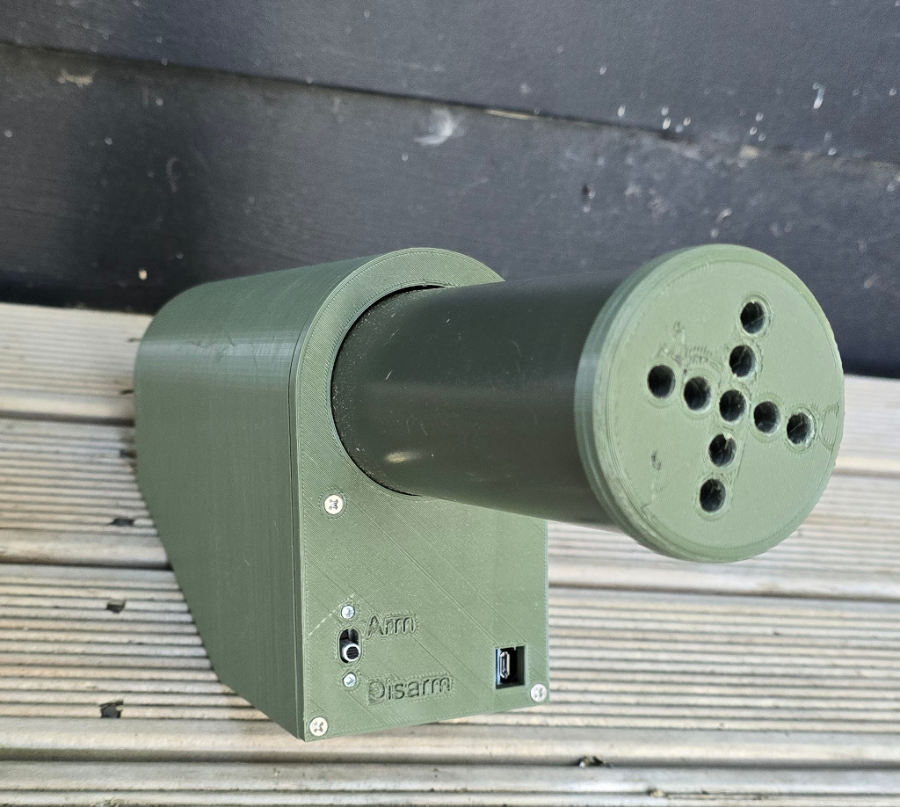
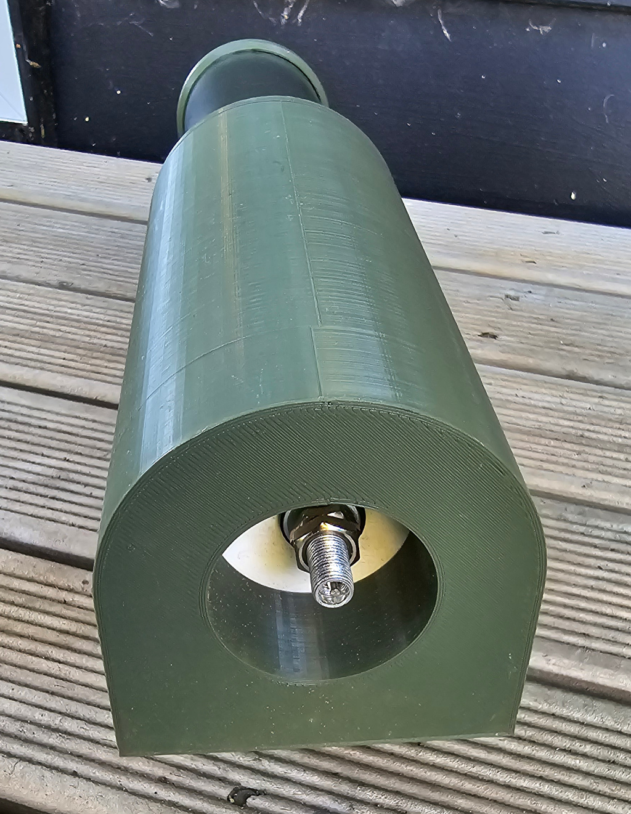
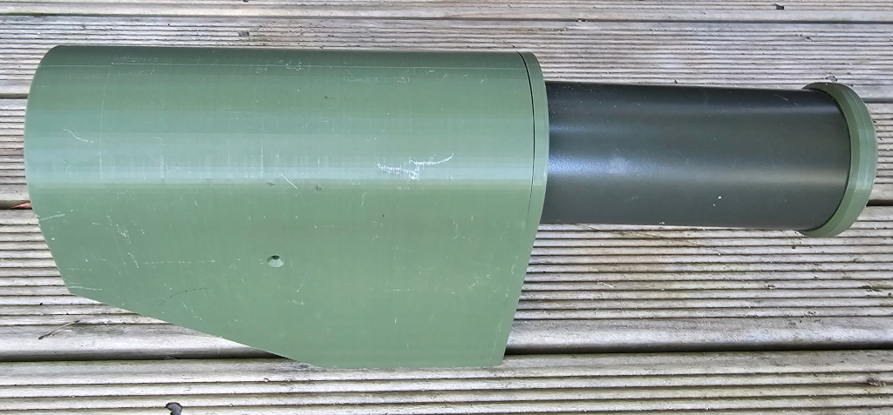

Q-Prop Creations
HPA IED
A non-descript little box, with an air reservoir, a hundred or so BBS and a remote control.
The BBs fly around ten meters, although even at point blank they don't hurt you will know it has gone off.
The air reservoir can be filled through a tyre valve, either with a hand pump, a prtable inflator, or an adapter fitted to an HPA line.


